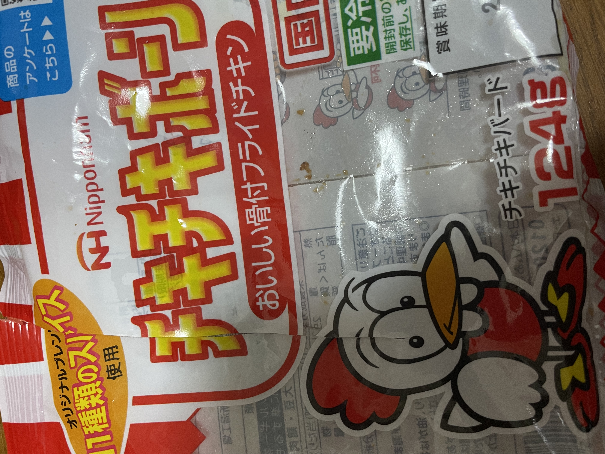
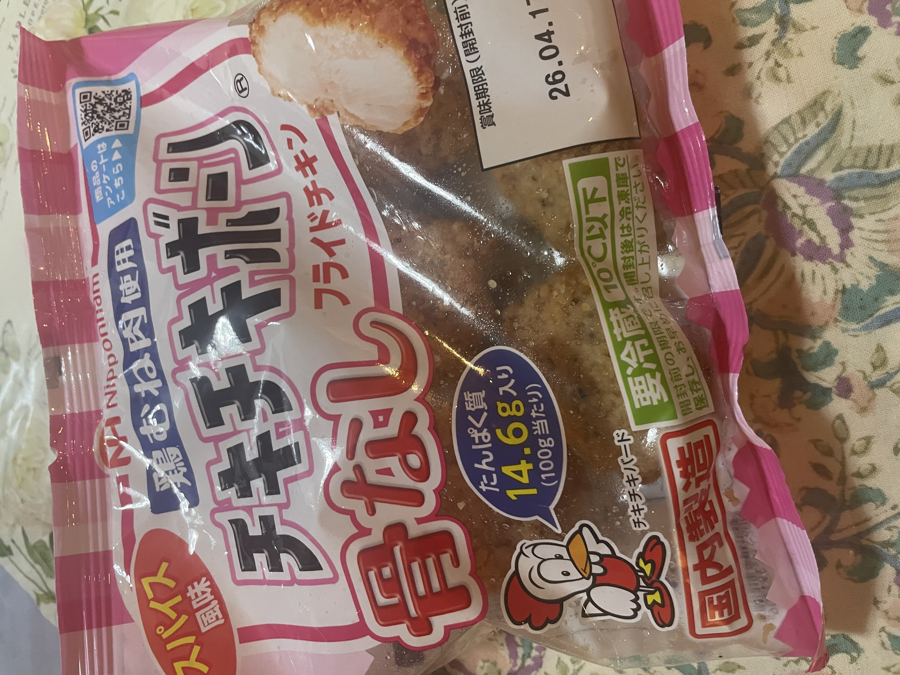

26/4/8（投稿日）TERUO＠teruo 普通に美味かった。 ■チキチキボーン（おいしい骨付きフライドチキン） ⇒★★★⋆ 3.5 ■Welcia 萱場店店 ■名古屋市 ■260円位 ■Ate day：26/4/6 （自分が撮った写真）
26/4/5（投稿日）TERUO＠teruo 相当美味い。元気が出る。また食べたい。初めて食べたわ。 ■チキチキボーン（骨なし）×（電子レンジで3個を50秒くらい温める） ⇒★★★★ 4.0 ■スギ薬局 文教台店 ■名古屋市 ■260円位 ■Ate day：26/4/2 （自分が撮った写真）